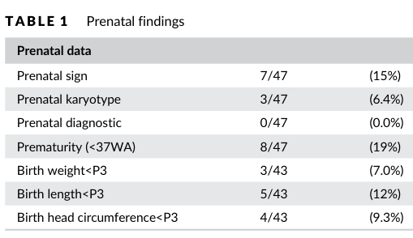

Smith-Magenis syndrome (SMS) is a contiguous-gene deletion / single-gene disorder caused by haploinsufficiency of RAI1 (retinoic acid induced 1), most often from a heterozygous interstitial deletion of chromosome 17p11.2 that includes RAI1, and less commonly from an intragenic RAI1 pathogenic variant. It is characterized by intellectual disability, developmental and speech delay, distinctive coarse facial features that progress with age, a striking behavioral phenotype (self-injurious behaviors, stereotypies including the "self-hug", attention deficit and aggression), and a hallmark inverted circadian rhythm of melatonin with severe sleep disturbance.
Ask a research question about Smith-Magenis Syndrome. OpenScientist will conduct autonomous deep research using the Disorder Mechanisms Knowledge Base and PubMed literature (typically 10-30 minutes).
Do not include personal health information in your question. Questions and results are cached in your browser's local storage.
name: Smith-Magenis Syndrome
creation_date: "2026-06-03T00:00:00Z"
synonyms:
- SMS
- 17p11.2 microdeletion syndrome
- Chromosome 17p11.2 deletion syndrome
description: >-
Smith-Magenis syndrome (SMS) is a contiguous-gene deletion / single-gene
disorder caused by haploinsufficiency of RAI1 (retinoic acid induced 1), most
often from a heterozygous interstitial deletion of chromosome 17p11.2 that
includes RAI1, and less commonly from an intragenic RAI1 pathogenic variant.
It is characterized by intellectual disability, developmental and speech delay,
distinctive coarse facial features that progress with age, a striking behavioral
phenotype (self-injurious behaviors, stereotypies including the "self-hug",
attention deficit and aggression), and a hallmark inverted circadian rhythm of
melatonin with severe sleep disturbance.
category: Mendelian
parents:
- hereditary disease
- chromosomal disorder
disease_term:
preferred_term: Smith-Magenis syndrome
term:
id: MONDO:0008434
label: Smith-Magenis syndrome
has_subtypes:
- name: 17p11.2 Deletion
display_name: 17p11.2 Deletion (Contiguous-Gene)
description: >-
The classic and most common form (~90% of cases), caused by a heterozygous
interstitial deletion of chromosome 17p11.2 spanning RAI1 and contiguous
genes. The common ~3.5 Mb deletion is flanked by low-copy repeats (SMS-REPs);
larger or atypical deletions may include additional dosage-sensitive genes
(e.g., FLCN) and modify the phenotype.
evidence:
- reference: PMID:33368193
reference_title: "Smith-Magenis syndrome: Clinical and behavioral characteristics in a large retrospective cohort."
supports: SUPPORT
evidence_source: HUMAN_CLINICAL
snippet: >-
Smith-Magenis syndrome (SMS), characterized by dysmorphic features,
neurodevelopmental disorder, and sleep disturbance, is due to an
interstitial deletion of chromosome 17p11.2 (90%) or to point mutations in
the RAI1 gene.
explanation: >-
Confirms the 17p11.2 deletion accounts for ~90% of SMS cases.
- name: RAI1 Variant
display_name: RAI1 Intragenic Variant
description: >-
The minority form (~10% of cases) caused by an intragenic RAI1 pathogenic
variant (frameshift, nonsense, or missense) without a chromosomal deletion.
The core behavioral, sleep, and neurodevelopmental phenotype is preserved,
while some features more dependent on contiguous-gene haploinsufficiency
(e.g., hypotonia) may be less prominent and overeating may be more frequent.
evidence:
- reference: PMID:29138588
reference_title: "RAI1 gene mutations: mechanisms of Smith-Magenis syndrome."
supports: SUPPORT
evidence_source: HUMAN_CLINICAL
snippet: >-
About 10% of all the SMS patients, in fact, carry an RAI1 mutation
responsible for the phenotype.
explanation: >-
Confirms ~10% of SMS arises from intragenic RAI1 mutations rather than
deletions, and that these patients show distinct features (less hypotonia,
more overeating).
inheritance:
- name: Autosomal dominant inheritance
description: >-
SMS is an autosomal dominant disorder. Almost all cases arise de novo, from
either a 17p11.2 deletion or an intragenic RAI1 pathogenic variant; familial
transmission is rare.
inheritance_term:
preferred_term: autosomal dominant inheritance
term:
id: HP:0000006
label: Autosomal dominant inheritance
evidence:
- reference: PMID:20301487
reference_title: "Smith-Magenis Syndrome (GeneReviews)"
supports: SUPPORT
evidence_source: HUMAN_CLINICAL
snippet: >-
SMS is an autosomal dominant disorder typically caused by a de novo
deletion of chromosome 17p11.2 that includes RAI1 or an intragenic RAI1
pathogenic variant.
explanation: >-
GeneReviews establishes autosomal dominant inheritance with predominantly
de novo origin.
pathophysiology:
- name: RAI1 Haploinsufficiency
description: >-
The unifying molecular cause of SMS is reduced dosage of RAI1, whether from a
17p11.2 deletion that removes one RAI1 allele or from an intragenic loss-of-function
variant. RAI1 encodes a nuclear transcriptional regulator; haploinsufficiency
disrupts a broad downstream transcriptional program, producing the
neurodevelopmental and systemic phenotype.
downstream:
- target: Circadian Clock Transcriptional Dysregulation
description: >-
Reduced RAI1 dosage lowers transcription of CLOCK and other core clock
genes, dysregulating the molecular circadian oscillator.
- target: Hypothalamic Satiety Dysregulation and Hyperphagia
description: >-
RAI1 haploinsufficiency disrupts hypothalamic feeding and satiety
signaling, contributing to hyperphagia and obesity.
cell_types:
- preferred_term: Neuron
term:
id: CL:0000540
label: neuron
biological_processes:
- preferred_term: Regulation of transcription by RNA polymerase II
term:
id: GO:0006357
label: regulation of transcription by RNA polymerase II
modifier: DECREASED
evidence:
- reference: PMID:12652298
reference_title: "Mutations in RAI1 associated with Smith-Magenis syndrome."
supports: SUPPORT
evidence_source: HUMAN_CLINICAL
snippet: >-
We identified dominant frameshift mutations leading to protein truncation
in RAI1 in three individuals who have phenotypic features consistent with
SMS but do not have 17p11.2 deletions
explanation: >-
Identification of RAI1 frameshift mutations in deletion-negative SMS
patients established RAI1 haploinsufficiency as the primary cause of the
syndrome.
- reference: PMID:22578325
reference_title: "Smith-Magenis syndrome results in disruption of CLOCK gene transcription and reveals an integral role for RAI1 in the maintenance of circadian rhythmicity."
supports: SUPPORT
evidence_source: IN_VITRO
snippet: >-
Data support RAI1 as a transcriptional regulator
explanation: >-
Confirms RAI1 functions as a transcriptional regulator whose
haploinsufficiency dysregulates downstream gene expression.
- reference: PMID:29138588
reference_title: "RAI1 gene mutations: mechanisms of Smith-Magenis syndrome."
supports: SUPPORT
evidence_source: HUMAN_CLINICAL
snippet: >-
RAI1 (or its homologs in animal models) acts as a transcriptional factor
implicated in embryonic neurodevelopment, neuronal differentiation, cell
growth and cell cycle regulation, bone and skeletal development, lipid and
glucose metabolisms, behavioral functions, and circadian activity
explanation: >-
Establishes RAI1 as a dosage-sensitive transcription factor whose
haploinsufficiency disrupts a broad downstream program spanning
neurodevelopment, metabolism, and circadian biology.
- name: Contiguous-Gene Deletion at 17p11.2
description: >-
The common SMS deletion is mediated by non-allelic homologous recombination
between flanking low-copy repeats (SMS-REPs) on 17p11.2, producing a
recurrent ~3.5 Mb deletion. While RAI1 is the critical dosage-sensitive gene,
haploinsufficiency of additional contiguous genes contributes to phenotypic
variability and to features such as short stature and otolaryngologic findings.
downstream:
- target: RAI1 Haploinsufficiency
description: >-
The 17p11.2 deletion removes one RAI1 allele, producing RAI1
haploinsufficiency as the central downstream molecular consequence that
drives the core SMS phenotype.
biological_processes:
- preferred_term: Nervous system development
term:
id: GO:0007399
label: nervous system development
modifier: ABNORMAL
evidence:
- reference: PMID:20301487
reference_title: "Smith-Magenis Syndrome (GeneReviews)"
supports: SUPPORT
evidence_source: HUMAN_CLINICAL
snippet: >-
a heterozygous deletion of chromosome 17p11.2 that includes RAI1 or a
heterozygous intragenic RAI1 pathogenic variant
explanation: >-
GeneReviews confirms the molecular basis as a 17p11.2 deletion including
RAI1, defining the contiguous-gene deletion mechanism.
- name: Circadian Clock Transcriptional Dysregulation
description: >-
RAI1 is a positive transcriptional regulator of CLOCK, a core component of
the mammalian circadian oscillator. RAI1 haploinsufficiency reduces CLOCK
transcription and dysregulates downstream clock genes (PER2, PER3, CRY1,
BMAL1), disrupting the molecular circadian rhythm. This underlies the inverted
melatonin rhythm and abnormal sleep-wake cycle in SMS.
downstream:
- target: Inverted Circadian Melatonin Rhythm
description: >-
Dysregulation of the molecular circadian clock drives the inverted timing
of pineal melatonin secretion.
cell_types:
- preferred_term: Neuron
term:
id: CL:0000540
label: neuron
biological_processes:
- preferred_term: Regulation of circadian rhythm
term:
id: GO:0042752
label: regulation of circadian rhythm
modifier: ABNORMAL
evidence:
- reference: PMID:22578325
reference_title: "Smith-Magenis syndrome results in disruption of CLOCK gene transcription and reveals an integral role for RAI1 in the maintenance of circadian rhythmicity."
supports: SUPPORT
evidence_source: IN_VITRO
snippet: >-
RAI1 regulates the transcription of circadian locomotor output cycles kaput
(CLOCK), a key component of the mammalian circadian oscillator
explanation: >-
Establishes that RAI1 transcriptionally regulates CLOCK, providing the
molecular link between RAI1 dosage and circadian dysfunction in SMS.
- reference: PMID:22578325
reference_title: "Smith-Magenis syndrome results in disruption of CLOCK gene transcription and reveals an integral role for RAI1 in the maintenance of circadian rhythmicity."
supports: SUPPORT
evidence_source: IN_VITRO
snippet: >-
haploinsufficiency of RAI1 and Rai1 in SMS fibroblasts and the mouse
hypothalamus, respectively, results in the transcriptional dysregulation of
the circadian clock and causes altered expression and regulation of multiple
circadian genes, including PER2, PER3, CRY1, BMAL1, and others
explanation: >-
Demonstrates that RAI1 haploinsufficiency dysregulates multiple core
circadian clock genes in patient cells and mouse hypothalamus.
- name: Inverted Circadian Melatonin Rhythm
description: >-
A hallmark of SMS is an inverted circadian rhythm of melatonin: most affected
individuals secrete melatonin during the day rather than at night. This
circadian dysregulation, downstream of RAI1 dosage effects on the molecular
clock, underlies the characteristic sleep disturbance (early sleep onset and
offset, frequent night awakenings, daytime sleepiness).
cell_types:
- preferred_term: Pinealocyte
term:
id: CL:0000652
label: pinealocyte
biological_processes:
- preferred_term: Melatonin biosynthetic process
term:
id: GO:0030187
label: melatonin biosynthetic process
modifier: ABNORMAL
evidence:
- reference: PMID:11445803
reference_title: "Inversion of the circadian rhythm of melatonin in the Smith-Magenis syndrome."
supports: SUPPORT
evidence_source: HUMAN_CLINICAL
snippet: >-
All children with SMS had a phase shift of their circadian rhythm of
melatonin.
explanation: >-
Documents the phase-shifted (inverted) circadian melatonin rhythm in all
studied SMS children.
- reference: PMID:22578325
reference_title: "Smith-Magenis syndrome results in disruption of CLOCK gene transcription and reveals an integral role for RAI1 in the maintenance of circadian rhythmicity."
supports: SUPPORT
evidence_source: HUMAN_CLINICAL
snippet: >-
An inverted melatonin rhythm (i.e., melatonin peaks during the day instead
of at night) and associated sleep-phase disturbances in individuals with SMS
explanation: >-
Confirms the inverted melatonin rhythm (daytime peak) and associated sleep
disturbance characteristic of SMS.
- name: Hypothalamic Satiety Dysregulation and Hyperphagia
description: >-
Childhood-to-adolescent onset obesity in SMS is linked to RAI1 dosage effects
on hypothalamic feeding and satiety signaling, with hyperphagic/foraging
behaviors. Dysfunction of the proximal melanocortin 4 receptor (MC4R) pathway
has been hypothesized, although an open-label setmelanotide (MC4R agonist)
trial did not significantly reduce body weight, suggesting the proximal MC4R
pathway is not the predominant driver of SMS obesity.
cell_types:
- preferred_term: Hypothalamic neuron
term:
id: CL:0000540
label: neuron
biological_processes:
- preferred_term: Regulation of appetite
term:
id: GO:0032098
label: regulation of appetite
modifier: ABNORMAL
evidence:
- reference: PMID:38987029
reference_title: "Investigation of setmelanotide, an MC4R agonist, for obesity in individuals with Smith-Magenis syndrome."
supports: SUPPORT
evidence_source: HUMAN_CLINICAL
snippet: >-
Obesity in people with SMS is believed partially due to dysfunction of the
proximal melanocortin 4 receptor (MC4R) pathway.
explanation: >-
Frames the hypothesized hypothalamic MC4R satiety-pathway contribution to
SMS obesity.
- reference: PMID:38987029
reference_title: "Investigation of setmelanotide, an MC4R agonist, for obesity in individuals with Smith-Magenis syndrome."
supports: PARTIAL
evidence_source: HUMAN_CLINICAL
snippet: >-
Results of this study do not suggest that dysfunction of the proximal MC4R
pathway is the main etiology for obesity in people with SMS.
explanation: >-
The negative setmelanotide trial qualifies the MC4R hypothesis, indicating
the proximal MC4R pathway is not the predominant driver of SMS obesity.
phenotypes:
- name: Intellectual disability
description: >-
Most individuals with SMS function in the mild-to-moderate range of
intellectual disability.
phenotype_term:
preferred_term: Intellectual disability
term:
id: HP:0001249
label: Intellectual disability
frequency: VERY_FREQUENT
evidence:
- reference: PMID:20301487
reference_title: "Smith-Magenis Syndrome (GeneReviews)"
supports: SUPPORT
evidence_source: HUMAN_CLINICAL
snippet: >-
Most individuals function in the mild-to-moderate range of intellectual
disability.
explanation: >-
GeneReviews documents intellectual disability as a core feature in most
individuals.
- name: Developmental delay
description: >-
Global developmental delay is present, with infants showing hypotonia,
feeding difficulties, and failure to thrive.
phenotype_term:
preferred_term: Global developmental delay
term:
id: HP:0001263
label: Global developmental delay
frequency: VERY_FREQUENT
evidence:
- reference: PMID:20301487
reference_title: "Smith-Magenis Syndrome (GeneReviews)"
supports: SUPPORT
evidence_source: HUMAN_CLINICAL
snippet: >-
Smith-Magenis syndrome (SMS) is characterized by distinctive physical
features (particularly coarse facial features that progress with age),
developmental delay, cognitive impairment, behavioral abnormalities, sleep
disturbances, and childhood-onset abdominal obesity.
explanation: >-
GeneReviews lists developmental delay among the defining features of SMS.
- name: Sleep disturbance
description: >-
Significant sleep disturbance is a hallmark of SMS, driven by the inverted
circadian melatonin rhythm; it includes difficulty falling asleep, frequent
and prolonged night awakenings, early morning waking, and excessive daytime
sleepiness.
phenotype_term:
preferred_term: Sleep disturbance
term:
id: HP:0002360
label: Sleep disturbance
frequency: VERY_FREQUENT
evidence:
- reference: PMID:20301487
reference_title: "Smith-Magenis Syndrome (GeneReviews)"
supports: SUPPORT
evidence_source: HUMAN_CLINICAL
snippet: >-
Behavioral manifestations, including significant sleep disturbances,
stereotypies, and maladaptive and self-injurious behaviors
explanation: >-
GeneReviews documents significant sleep disturbances as a behavioral
manifestation of SMS.
- name: Abnormal pineal melatonin secretion
description: >-
SMS is characterized by an inverted circadian rhythm of melatonin secretion,
with secretion peaking during the day rather than at night.
phenotype_term:
preferred_term: Abnormal pineal melatonin secretion
term:
id: HP:0012689
label: Abnormal pineal melatonin secretion
evidence:
- reference: PMID:11445803
reference_title: "Inversion of the circadian rhythm of melatonin in the Smith-Magenis syndrome."
supports: SUPPORT
evidence_source: HUMAN_CLINICAL
snippet: >-
All children with SMS had a phase shift of their circadian rhythm of
melatonin.
explanation: >-
The inverted/phase-shifted melatonin rhythm reflects abnormal pineal
melatonin secretion in SMS.
- name: Self-injurious behavior
description: >-
Maladaptive behaviors include self-injurious behaviors such as self-hitting,
self-biting, skin picking, polyembolokoilamania (inserting foreign objects
into body orifices), and onychotillomania (nail pulling).
phenotype_term:
preferred_term: Self-injurious behavior
term:
id: HP:0100716
label: Self-injurious behavior
evidence:
- reference: PMID:20301487
reference_title: "Smith-Magenis Syndrome (GeneReviews)"
supports: SUPPORT
evidence_source: HUMAN_CLINICAL
snippet: >-
Maladaptive behaviors include frequent outbursts / temper tantrums,
attention-seeking behaviors, opposition, aggression, and self-injurious
behaviors including self-hitting, self-biting, skin picking
explanation: >-
GeneReviews documents self-injurious behaviors as part of the SMS
behavioral phenotype.
- name: Onychotillomania
description: >-
Yanking out of fingernails and/or toenails (onychotillomania) is a distinctive
self-injurious behavior in SMS.
phenotype_term:
preferred_term: Onychotillomania
term:
id: HP:0032509
label: Onychotillomania
evidence:
- reference: PMID:20301487
reference_title: "Smith-Magenis Syndrome (GeneReviews)"
supports: SUPPORT
evidence_source: HUMAN_CLINICAL
snippet: >-
yanking fingernails and/or toenails (onychotillomania)
explanation: >-
GeneReviews lists onychotillomania as a characteristic self-injurious
behavior in SMS.
- name: Motor stereotypy
description: >-
Stereotypic behaviors are common; the spasmodic upper-body squeeze or
"self-hug" is highly associated with SMS.
phenotype_term:
preferred_term: Motor stereotypy
term:
id: HP:0000733
label: Motor stereotypy
evidence:
- reference: PMID:20301487
reference_title: "Smith-Magenis Syndrome (GeneReviews)"
supports: SUPPORT
evidence_source: HUMAN_CLINICAL
snippet: >-
Among the stereotypic behaviors described, the spasmodic upper body
squeeze or "self-hug" seems to be highly associated with SMS.
explanation: >-
The self-hug stereotypy is a hallmark motor stereotypy of SMS.
- name: Aggressive behavior
description: >-
Maladaptive behaviors include aggression, oppositional behavior, and frequent
temper tantrums/outbursts.
phenotype_term:
preferred_term: Aggressive behavior
term:
id: HP:0000718
label: Aggressive behavior
evidence:
- reference: PMID:20301487
reference_title: "Smith-Magenis Syndrome (GeneReviews)"
supports: SUPPORT
evidence_source: HUMAN_CLINICAL
snippet: >-
opposition, aggression, and self-injurious behaviors
explanation: >-
GeneReviews documents aggression as part of the SMS maladaptive behavior
profile.
- name: Hyperactivity
description: >-
Problems with executive function are common, including inattention,
distractibility, hyperactivity, and impulsivity.
phenotype_term:
preferred_term: Hyperactivity
term:
id: HP:0000752
label: Hyperactivity
evidence:
- reference: PMID:20301487
reference_title: "Smith-Magenis Syndrome (GeneReviews)"
supports: SUPPORT
evidence_source: HUMAN_CLINICAL
snippet: >-
problems with executive function, including inattention, distractibility,
hyperactivity, and impulsivity
explanation: >-
GeneReviews documents hyperactivity and inattention as common executive
function problems in SMS.
- name: Anxiety
description: >-
Significant anxiety is common in individuals with SMS.
phenotype_term:
preferred_term: Anxiety
term:
id: HP:0000739
label: Anxiety
evidence:
- reference: PMID:20301487
reference_title: "Smith-Magenis Syndrome (GeneReviews)"
supports: SUPPORT
evidence_source: HUMAN_CLINICAL
snippet: >-
Significant anxiety is common as are problems with executive function
explanation: >-
GeneReviews documents anxiety as a common feature in SMS.
- name: Coarse facial features
description: >-
SMS is characterized by distinctive coarse facial features that progress with
age.
phenotype_term:
preferred_term: Coarse facial features
term:
id: HP:0000280
label: Coarse facial features
clinical_course: PROGRESSIVE
frequency: VERY_FREQUENT
evidence:
- reference: PMID:20301487
reference_title: "Smith-Magenis Syndrome (GeneReviews)"
supports: SUPPORT
evidence_source: HUMAN_CLINICAL
snippet: >-
distinctive physical features (particularly coarse facial features that
progress with age)
explanation: >-
GeneReviews documents progressive coarse facial features as a hallmark of SMS.
- name: Neonatal hypotonia
description: >-
Infants with SMS have hypotonia, hyporeflexia, feeding difficulties, and
failure to thrive.
phenotype_term:
preferred_term: Neonatal hypotonia
term:
id: HP:0001319
label: Neonatal hypotonia
evidence:
- reference: PMID:20301487
reference_title: "Smith-Magenis Syndrome (GeneReviews)"
supports: SUPPORT
evidence_source: HUMAN_CLINICAL
snippet: >-
Infants have feeding difficulties, failure to thrive, hypotonia,
hyporeflexia, prolonged napping or need to be awakened for feeds, and
generalized lethargy.
explanation: >-
GeneReviews documents infantile hypotonia among the early features of SMS.
- name: Abdominal obesity
description: >-
Childhood-onset abdominal obesity is a recognized feature of SMS.
phenotype_term:
preferred_term: Abdominal obesity
term:
id: HP:0012743
label: Abdominal obesity
evidence:
- reference: PMID:20301487
reference_title: "Smith-Magenis Syndrome (GeneReviews)"
supports: SUPPORT
evidence_source: HUMAN_CLINICAL
snippet: >-
childhood-onset abdominal obesity
explanation: >-
GeneReviews documents childhood-onset abdominal obesity as a feature of SMS.
- name: Delayed speech and language development
description: >-
Speech and language development is delayed in SMS, with expressive language
typically more affected than receptive.
phenotype_term:
preferred_term: Delayed speech and language development
term:
id: HP:0000750
label: Delayed speech and language development
evidence:
- reference: PMID:38324273
reference_title: "Speech, Language, Hearing, and Otopathology Results From the International Smith-Magenis Syndrome Patient Registry."
supports: SUPPORT
evidence_source: HUMAN_CLINICAL
snippet: >-
is associated with delays in speech-language development, otopathology, and
hearing loss
explanation: >-
The international SMS registry confirms speech-language developmental delay
as a core communication feature.
- name: Hearing impairment
description: >-
Hearing loss is common in SMS, frequently associated with chronic otitis
media and middle-ear dysfunction requiring pressure-equalization tubes.
phenotype_term:
preferred_term: Hearing impairment
term:
id: HP:0000365
label: Hearing impairment
frequency: FREQUENT
evidence:
- reference: PMID:38324273
reference_title: "Speech, Language, Hearing, and Otopathology Results From the International Smith-Magenis Syndrome Patient Registry."
supports: SUPPORT
evidence_source: HUMAN_CLINICAL
snippet: >-
35% of subjects had hearing loss, 66% had a history of otitis media, and
62% had received PE tubes.
explanation: >-
The SMS registry quantifies hearing loss in 35% of individuals.
- name: Otitis media
description: >-
A history of otitis media is highly prevalent in SMS, contributing to
conductive hearing loss and the need for pressure-equalization tubes.
phenotype_term:
preferred_term: Otitis media
term:
id: HP:0000388
label: Otitis media
frequency: FREQUENT
evidence:
- reference: PMID:38324273
reference_title: "Speech, Language, Hearing, and Otopathology Results From the International Smith-Magenis Syndrome Patient Registry."
supports: SUPPORT
evidence_source: HUMAN_CLINICAL
snippet: >-
35% of subjects had hearing loss, 66% had a history of otitis media, and
62% had received PE tubes.
explanation: >-
The SMS registry documents a history of otitis media in 66% of individuals.
- name: Ophthalmologic abnormality
description: >-
Ophthalmologic problems are highly prevalent in SMS — reported in 89% of a
large European cohort — and include refractive errors, strabismus, and other
eye findings; GeneReviews recommends annual ophthalmology evaluations.
phenotype_term:
preferred_term: Ophthalmologic abnormality
term:
id: HP:0000478
label: Abnormality of the eye
frequency: VERY_FREQUENT
evidence:
- reference: PMID:33368193
reference_title: "Smith-Magenis syndrome: Clinical and behavioral characteristics in a large retrospective cohort."
supports: SUPPORT
evidence_source: HUMAN_CLINICAL
snippet: >-
ophthalmological problems (89%)
explanation: >-
The 47-patient European cohort reports ophthalmological problems in 89% of
individuals, making eye involvement the most prevalent non-behavioral
feature of SMS.
- reference: PMID:20301487
reference_title: "Smith-Magenis Syndrome (GeneReviews)"
supports: SUPPORT
evidence_source: HUMAN_CLINICAL
snippet: >-
Annual otolaryngology, audiology, and ophthalmology evaluations.
explanation: >-
GeneReviews recommends annual ophthalmology surveillance, documenting
ophthalmologic involvement as a recognized feature of SMS.
- name: Scoliosis
description: >-
Scoliosis is a recognized skeletal manifestation of SMS requiring orthopedic
surveillance, reported in 43% of a large European cohort.
phenotype_term:
preferred_term: Scoliosis
term:
id: HP:0002650
label: Scoliosis
frequency: FREQUENT
evidence:
- reference: PMID:33368193
reference_title: "Smith-Magenis syndrome: Clinical and behavioral characteristics in a large retrospective cohort."
supports: SUPPORT
evidence_source: HUMAN_CLINICAL
snippet: >-
scoliosis
(43%)
explanation: >-
The European cohort reports scoliosis in 43% of individuals, supporting
FREQUENT classification.
- reference: PMID:20301487
reference_title: "Smith-Magenis Syndrome (GeneReviews)"
supports: SUPPORT
evidence_source: HUMAN_CLINICAL
snippet: >-
Monitor for the development and/or progression of seizures and scoliosis.
explanation: >-
GeneReviews recommends surveillance for scoliosis, documenting it as a
skeletal feature of SMS.
- name: Constipation
description: >-
Constipation/obstipation is a frequent gastrointestinal manifestation of SMS.
phenotype_term:
preferred_term: Constipation
term:
id: HP:0002019
label: Constipation
frequency: FREQUENT
evidence:
- reference: PMID:33368193
reference_title: "Smith-Magenis syndrome: Clinical and behavioral characteristics in a large retrospective cohort."
supports: SUPPORT
evidence_source: HUMAN_CLINICAL
snippet: >-
We identified a high prevalence of obstipation (45%).
explanation: >-
The 47-patient European cohort reports constipation/obstipation in 45% of
individuals.
- name: Obesity
description: >-
Overweight and obesity develop in most individuals with SMS, typically from
later childhood and adolescence, often with hyperphagic/foraging behaviors.
phenotype_term:
preferred_term: Obesity
term:
id: HP:0001513
label: Obesity
frequency: FREQUENT
evidence:
- reference: PMID:33368193
reference_title: "Smith-Magenis syndrome: Clinical and behavioral characteristics in a large retrospective cohort."
supports: SUPPORT
evidence_source: HUMAN_CLINICAL
snippet: >-
60% of our patients older than 10 years were overweight.
explanation: >-
The European cohort reports overweight in 60% of patients older than 10
years, supporting obesity as a common feature.
- name: Polyphagia
description: >-
Overeating and hyperphagic/foraging behaviors are described in SMS and
contribute to obesity.
phenotype_term:
preferred_term: Hyperphagia
term:
id: HP:0002591
label: Polyphagia
evidence:
- reference: PMID:29138588
reference_title: "RAI1 gene mutations: mechanisms of Smith-Magenis syndrome."
supports: SUPPORT
evidence_source: HUMAN_CLINICAL
snippet: >-
They usually have lower incidence of hypotonia and less cognitive
impairment than those with 17p11.2 deletions but more frequently show the
behavioral characteristics of the syndrome and overeating issues.
explanation: >-
Falco 2017 documents overeating issues in SMS, particularly among RAI1
variant patients.
- name: Abnormal heart morphology
description: >-
Congenital heart defects, including tetralogy of Fallot and pulmonary
stenosis, occur in a subset of individuals with SMS.
phenotype_term:
preferred_term: Congenital heart defect
term:
id: HP:0001627
label: Abnormal heart morphology
frequency: OCCASIONAL
evidence:
- reference: PMID:33368193
reference_title: "Smith-Magenis syndrome: Clinical and behavioral characteristics in a large retrospective cohort."
supports: SUPPORT
evidence_source: HUMAN_CLINICAL
snippet: >-
Prevalence of heart defects (6.5% tetralogy of Fallot, 6.5% pulmonary
stenosis)
explanation: >-
The cohort documents congenital heart defects (tetralogy of Fallot,
pulmonary stenosis) in a minority of individuals.
genetic:
- name: RAI1 haploinsufficiency
association: Causative
notes: >-
SMS is caused by haploinsufficiency of RAI1, from either a 17p11.2 deletion
including RAI1 or an intragenic RAI1 pathogenic variant.
gene_term:
preferred_term: RAI1
term:
id: hgnc:9834
label: RAI1
evidence:
- reference: PMID:12652298
reference_title: "Mutations in RAI1 associated with Smith-Magenis syndrome."
supports: SUPPORT
evidence_source: HUMAN_CLINICAL
snippet: >-
We identified dominant frameshift mutations leading to protein truncation
in RAI1 in three individuals who have phenotypic features consistent with
SMS but do not have 17p11.2 deletions
explanation: >-
RAI1 frameshift mutations in deletion-negative SMS patients identify RAI1
as the causative gene.
- reference: PMID:29138588
reference_title: "RAI1 gene mutations: mechanisms of Smith-Magenis syndrome."
supports: SUPPORT
evidence_source: HUMAN_CLINICAL
snippet: >-
SMS is caused by interstitial 17p11.2 deletions, encompassing multiple
genes and including the retinoic acid-induced 1 gene (RAI1), or by mutations
in RAI1 itself. About 10% of all the SMS patients, in fact, carry an RAI1
mutation responsible for the phenotype.
explanation: >-
Quantifies the genetic architecture: ~90% of SMS from 17p11.2 deletions
including RAI1 and ~10% from intragenic RAI1 mutations, supporting the two
subtypes.
treatments:
- name: Melatonin
description: >-
Exogenous melatonin is used to manage the sleep disorder in SMS, addressing
the inverted circadian melatonin rhythm. GeneReviews notes consideration of
melatonin, tasimelteon, acebutolol, and beta-1-adrenergic antagonists for
sleep disorders.
therapeutic_modality: SMALL_MOLECULE
treatment_term:
preferred_term: Pharmacotherapy
term:
id: NCIT:C15986
label: Pharmacotherapy
therapeutic_agent:
- preferred_term: melatonin
term:
id: CHEBI:16796
label: melatonin
evidence:
- reference: PMID:20301487
reference_title: "Smith-Magenis Syndrome (GeneReviews)"
supports: SUPPORT
evidence_source: HUMAN_CLINICAL
snippet: >-
Consider treating sleep disorders using acebutolol, melatonin, tasimelteon,
and beta-1-adrenergic antagonists.
explanation: >-
GeneReviews recommends melatonin among the options for treating the sleep
disorder in SMS.
- reference: PMID:26336863
reference_title: "Behavioral disturbance and treatment strategies in Smith-Magenis syndrome."
supports: SUPPORT
evidence_source: HUMAN_CLINICAL
snippet: >-
the combined intake of beta-blockers in the morning and melatonin in the
evening may radically alleviate the circadian rhythm problems
explanation: >-
Supports the combined morning beta-blocker plus evening melatonin strategy
for the inverted circadian rhythm in SMS.
- name: Setmelanotide
description: >-
Setmelanotide, an MC4R agonist, was tested in an open-label pilot for obesity
in SMS based on the hypothesized proximal MC4R pathway dysfunction. It did not
significantly reduce body weight, though self-reported hunger decreased.
therapeutic_modality: PEPTIDE
treatment_term:
preferred_term: Pharmacotherapy
term:
id: NCIT:C15986
label: Pharmacotherapy
evidence:
- reference: PMID:38987029
reference_title: "Investigation of setmelanotide, an MC4R agonist, for obesity in individuals with Smith-Magenis syndrome."
supports: PARTIAL
evidence_source: HUMAN_CLINICAL
snippet: >-
In this trial, setmelanotide did not significantly reduce body weight in
participants with SMS.
explanation: >-
The open-label setmelanotide pilot did not achieve significant weight
reduction in SMS, indicating limited efficacy as an anti-obesity therapy.
- name: Behavioral and developmental therapy
description: >-
Management includes early childhood intervention, individualized special
education, and speech-language, physical, occupational, and behavioral therapy.
treatment_term:
preferred_term: cognitive and behavioral intervention
term:
id: MAXO:0000010
label: cognitive and behavioral intervention
evidence:
- reference: PMID:20301487
reference_title: "Smith-Magenis Syndrome (GeneReviews)"
supports: SUPPORT
evidence_source: HUMAN_CLINICAL
snippet: >-
Early childhood intervention programs; individualized special education for
school-age children; speech-language, physical, occupational, and
behavioral therapy and vocational training support later in life.
explanation: >-
GeneReviews documents multidisciplinary behavioral and developmental therapy
as the mainstay of management.
clinical_trials:
- name: NCT02231008
phase: PHASE_III
status: COMPLETED
description: >-
Double-blind, randomized, two-period crossover study evaluating tasimelteon
versus placebo on sleep disturbances in individuals with Smith-Magenis
syndrome, targeting the circadian sleep phenotype.
target_phenotypes:
- preferred_term: Sleep disturbance
term:
id: HP:0002360
label: Sleep disturbance
evidence:
- reference: clinicaltrials:NCT02231008
supports: SUPPORT
snippet: >-
The aim of this study is to investigate tasimelteon vs. placebo on sleep
disturbances of individuals with Smith-Magenis Syndrome.
explanation: >-
This trial evaluates a melatonin-receptor agonist (tasimelteon) for the
circadian sleep disturbance that is a hallmark of SMS.
references:
- reference: PMID:20301487
title: "Smith-Magenis Syndrome."
tags:
- GeneReviews
Smith–Magenis syndrome is a complex neurodevelopmental disorder characterized by distinctive physical features, developmental delay/intellectual disability, and a characteristic behavioral phenotype that prominently includes sleep disturbance and self-injury. A recent clinical review describes SMS as “a complex genetic disorder characterized by distinctive physical features, developmental delay, cognitive impairment, and a typical behavioral phenotype” (Rinaldi et al., 2022; publication date 2022-02; URL https://doi.org/10.3390/genes13020335). (rinaldi2022smithmagenissyndrome—clinicalreview pages 1-2)
Not comprehensively enumerated in the retrieved sources. In practice, “Smith–Magenis syndrome” and “SMS” are the dominant names used across clinical and research literature. (rinaldi2022smithmagenissyndrome—clinicalreview pages 1-2)
Most knowledge used here is from aggregated disease-level resources (clinical reviews, retrospective cohorts, patient registries, and ClinicalTrials.gov trial records), rather than EHR-derived single-patient records. (gouard2021smith‐magenissyndromeclinical pages 1-2, brennan2024speechlanguagehearing pages 1-2, NCT02231008 chunk 1)
SMS is caused by RAI1 haploinsufficiency, most commonly via a 17p11.2 interstitial deletion and less commonly via pathogenic variants in RAI1.
Verbatim abstract-supported statement: Falco et al. (2017; publication date 2017-11; URL https://doi.org/10.2147/TACG.S128455) states: “SMS is caused by interstitial 17p11.2 deletions, encompassing multiple genes and including the retinoic acid-induced 1 gene (RAI1), or by mutations in RAI1 itself. About 10% of all the SMS patients, in fact, carry an RAI1 mutation responsible for the phenotype.” (falco2017rai1genemutations pages 1-2)
Rinaldi et al. (2022) similarly summarizes that SMS is caused by ~90% 17p11.2 deletions (including RAI1) and ~10% pathogenic RAI1 variants. (rinaldi2022smithmagenissyndrome—clinicalreview pages 1-2)
For a Mendelian genomic disorder such as SMS, “risk factors” are primarily genetic and relate to de novo mutational mechanisms generating recurrent CNVs at 17p11.2 (e.g., NAHR mediated by low-copy repeats). (poisson2015behavioraldisturbanceand pages 1-2, gouard2021smith‐magenissyndromeclinical pages 1-2)
No genetic or environmental protective factors were identified in the retrieved sources.
No specific GxE interactions were identified in the retrieved sources.
SMS phenotypes span neurodevelopmental, behavioral/sleep, craniofacial, musculoskeletal, ENT/hearing, ophthalmologic, cardiovascular, gastrointestinal, and metabolic domains.
A large European retrospective cohort of 47 individuals with 17p11.2 deletions (Le Gouard/Gouard et al., 2021; publication date 2021-01; URL https://doi.org/10.1111/cge.13906) reported: ophthalmological problems 89%, scoliosis 43%, deafness 32%, obstipation/constipation 45%, epilepsy 2%, behavioral problems (temper tantrums/difficult behaviors) 84%, and night-time awakenings 86%. (gouard2021smith‐magenissyndromeclinical pages 1-2)
A 2024 international patient-registry analysis focused on speech/hearing (Brennan et al., 2024; publication date 2024-03; URL https://doi.org/10.1044/2023_JSLHR-23-00179) reported (n=82): hearing loss 35%, otitis media history 66%, and PE tube placement 62%. (brennan2024speechlanguagehearing pages 1-2)
In the 47-person cohort, Gouard et al. (2021) reported a substantial social/family burden: “70% of parents had to adapt their working time,” supporting high caregiver impact. (gouard2021smith‐magenissyndromeclinical pages 1-2)
Based on retrieved phenotypes: - Sleep disturbance / night awakenings: HP:0002360 (Sleep disturbance); HP:0002323 (Sleep fragmentation) - Self-injury / stereotypies: HP:0100716 (Self-injurious behavior); HP:0000733 (Stereotypy) - Intellectual disability / developmental delay: HP:0001249 (Intellectual disability); HP:0001263 (Global developmental delay) - Speech delay: HP:0000750 (Delayed speech and language development) - Hearing loss / otitis media: HP:0000365 (Hearing impairment); HP:0000388 (Otitis media) - Scoliosis: HP:0002650 (Scoliosis) - Constipation: HP:0002019 (Constipation) - Overweight/obesity: HP:0001513 (Obesity); HP:0004324 (Hyperphagia)
(Phenotype frequencies supporting these suggestions are documented in Gouard 2021 and Brennan 2024.) (gouard2021smith‐magenissyndromeclinical pages 1-2, brennan2024speechlanguagehearing pages 1-2)
Gouard et al. (2021) reports that the 17p11.2 region contains multiple low-copy repeats, with a common NAHR-mediated deletion of ~3.7 Mb; ~30% can be atypical deletions (1.5–9 Mb), with a ~650 kb critical region including RAI1. (gouard2021smith‐magenissyndromeclinical pages 1-2)
SMS is generally autosomal dominant but usually de novo. - Gouard et al. (2021) notes recurrence risk from gonadal mosaicism <1%, rising to 3%–5% if a parent is mosaic. (gouard2021smith‐magenissyndromeclinical pages 1-2)
No validated modifier genes or disease-specific epigenetic mechanisms were identified in the retrieved sources.
No specific toxins, lifestyle, or infectious etiologies were identified as causal or triggering factors in the retrieved sources; SMS is primarily genetic. (rinaldi2022smithmagenissyndrome—clinicalreview pages 1-2, falco2017rai1genemutations pages 1-2)
A core mechanistic feature is circadian dysregulation with an inverted melatonin rhythm. - Poisson et al. (2015; publication date 2015-09; URL https://doi.org/10.1186/s13023-015-0330-x) describes sleep disturbance with “an inversion of the melatonin secretion cycle,” associated with excessive daytime sleepiness and nighttime agitation. (poisson2015behavioraldisturbanceand pages 1-2) - A mechanistic synthesis reports that the sleep phenotype “results in >90% of cases from an inverted circadian rhythm of melatonin,” observed in both RAI1 mutation and deletion cases, and measurable via urinary 6-sulfatoxymelatonin (aMT6s). (sciarrillo2018identificationofnovel pages 10-13)
Causal chain (simplified): RAI1 haploinsufficiency → altered regulation of circadian genes and melatonin timing → daytime sleepiness + nocturnal awakenings/agitation → downstream behavioral dysregulation and caregiver burden. (poisson2015behavioraldisturbanceand pages 1-2, sciarrillo2018identificationofnovel pages 10-13)
Obesity and hyperphagic behaviors are common and often emerge later in childhood/adolescence. - Lazareva et al. (2024; publication date 2024-07; URL https://doi.org/10.1016/j.orcp.2024.07.001) notes that RAI1 haploinsufficiency affects feeding and satiety and that obesity in SMS is believed in part to involve proximal melanocortin (MC4R-related) pathway dysfunction. (lazareva2024investigationofsetmelanotide pages 1-3, lazareva2024investigationofsetmelanotide pages 3-4)
Causal chain (simplified): RAI1 haploinsufficiency → dysregulated hypothalamic satiety signaling (including reduced Pomc and reduced Bdnf expression in mouse models, as summarized) → hyperphagia/foraging behaviors → overweight/obesity and metabolic complications. (lazareva2024investigationofsetmelanotide pages 3-4)
Suggested cell types (Cell Ontology, examples): - CL:0000540 (neuron) - CL:0000700 (hypothalamic neuron)
Suggested anatomical structures (UBERON, examples): - UBERON:0000955 (brain) - UBERON:0001898 (hypothalamus) - UBERON:0002107 (liver) for metabolic sequelae (not directly quantified in retrieved texts)
Based on multi-system phenotype frequencies: - Nervous system/brain (neurodevelopmental disability, sleep/circadian dysregulation, behavioral phenotype). (rinaldi2022smithmagenissyndrome—clinicalreview pages 1-2, poisson2015behavioraldisturbanceand pages 1-2) - Ear/middle ear and auditory system (otitis media, hearing loss, PE tubes). (brennan2024speechlanguagehearing pages 1-2) - Eye (high prevalence of ophthalmologic problems in cohort). (gouard2021smith‐magenissyndromeclinical pages 1-2) - Spine/musculoskeletal system (scoliosis). (gouard2021smith‐magenissyndromeclinical pages 1-2) - Gastrointestinal tract (constipation/obstipation). (gouard2021smith‐magenissyndromeclinical pages 1-2) - Cardiovascular system (congenital heart defects in cohort). (gouard2021smith‐magenissyndromeclinical pages 1-2)
A visual cohort table summarizing multi-system features and frequencies is available from Gouard et al. (2021). (gouard2021smith‐magenissyndromeclinical media 051e48d8, gouard2021smith‐magenissyndromeclinical media ff7a4193, gouard2021smith‐magenissyndromeclinical media 1a70035f, gouard2021smith‐magenissyndromeclinical media 28a66c76)
Prevalence estimates repeatedly cited across sources range from ~1/15,000 to 1/25,000. (rinaldi2022smithmagenissyndrome—clinicalreview pages 1-2, falco2017rai1genemutations pages 1-2, gouard2021smith‐magenissyndromeclinical pages 1-2)
Registry sample demographics reported predominantly White and US-based (which may reflect ascertainment and limits generalizability). (brennan2024speechlanguagehearing pages 3-4)
Diagnosis can be delayed because early facial features may be subtle and behavioral features emerge later in childhood. (sciarrillo2018identificationofnovel pages 6-10)
Differential diagnosis details were not comprehensively retrievable in the current document set (though reviews note overlap with other syndromic neurodevelopmental disorders). (rinaldi2022smithmagenissyndrome—clinicalreview pages 1-2)
Quantitative survival/life expectancy statistics were not available in retrieved sources. Morbidity is substantial due to sleep disturbance, behavioral dysregulation, developmental disability, and multi-system medical issues (ENT, ophthalmologic, musculoskeletal, GI), with documented caregiver work impact. (gouard2021smith‐magenissyndromeclinical pages 1-2, poisson2015behavioraldisturbanceand pages 1-2)
A frequently discussed circadian-targeting strategy is morning beta-blocker plus evening melatonin. - Poisson et al. (2015) states sleep disturbances are linked to “an inversion of the melatonin secretion cycle” and that “the combined intake of beta-blockers in the morning and melatonin in the evening may radically alleviate the circadian rhythm problems.” (publication date 2015-09; URL https://doi.org/10.1186/s13023-015-0330-x) (poisson2015behavioraldisturbanceand pages 1-2) - A mechanistic synthesis summarizes small interventional evidence where acenbutolol suppressed daytime melatonin peaks and combined acenbutolol + controlled-release melatonin produced subjective improvement. (sciarrillo2018identificationofnovel pages 10-13)
MAXO suggestions (examples): - Melatonin supplementation: MAXO:0001039 (melatonin therapy) (term label may vary by version) - Beta-adrenergic antagonist therapy: MAXO:0000474 (beta-blocker therapy) - Light therapy: MAXO:0000560 (phototherapy/light therapy)
Setmelanotide (MC4R agonist) pilot trial: Lazareva et al. (2024; publication date 2024-07; URL https://doi.org/10.1016/j.orcp.2024.07.001) conducted an open-label pilot in SMS (n=12; 10 completed), reporting mean percent weight change −0.28% (P=0.66) and decreased self-reported hunger (p=0.011), concluding no significant weight reduction; adverse events were common (injection-site reactions, hyperpigmentation) without withdrawals/deaths attributed to AEs. (lazareva2024investigationofsetmelanotide pages 1-3)
MAXO suggestions (examples): - MC4R agonist therapy / anti-obesity pharmacotherapy: MAXO term depends on vocabulary version; annotate as anti-obesity pharmacotherapy and melanocortin pathway agonist treatment.
Key ClinicalTrials.gov records retrieved include: - NCT02231008 (Vanda; tasimelteon vs placebo; double-blind randomized crossover; start Sep 2015, primary completion 2018-11-19, study completion Jan 2022; primary outcome improvement in sleep parameters over 9 weeks). No results were posted in the retrieved trial record excerpt. URL https://clinicaltrials.gov/study/NCT02231008 (NCT02231008 chunk 1) - NCT00506259 (NIH; light therapy + controlled-release melatonin; randomized crossover; completed; no posted results in retrieved excerpt). (NCT00506259 chunk 1) - NCT03154697 (Vanda; observational database of SMS and sleep disturbances; recruiting; last update posted 2024-03-20; URL https://clinicaltrials.gov/study/NCT03154697). (NCT03154697 chunk 1)
Primary prevention is not generally applicable because most cases arise de novo; however, genetic counseling and prenatal diagnosis may be considered for families with a known pathogenic variant or mosaicism risk. Specific prevention guideline statements were not retrieved in the current corpus. (gouard2021smith‐magenissyndromeclinical pages 1-2)
No naturally occurring non-human SMS analogs were identified in the retrieved sources.
Mouse models with Rai1 haploinsufficiency are used to study SMS-relevant obesity/hyperphagia mechanisms and hypothalamic satiety signaling disruptions, and to test candidate pathway interventions (e.g., BDNF signaling augmentation), as summarized in the context of human translational work. (lazareva2024investigationofsetmelanotide pages 3-4)
The following table compiles the most decision-relevant, quantitatively supported findings from the retrieved sources.
| Domain | Specific finding | Evidence type | Primary source | PMID if known | URL | Citation ID |
|---|---|---|---|---|---|---|
| Identifiers | Smith–Magenis syndrome (SMS) is identified as OMIM #182290; defined as a complex genetic disorder with distinctive physical features, developmental delay, cognitive impairment, and a behavioral phenotype. | Review | Rinaldi 2022 Genes | https://doi.org/10.3390/genes13020335 | (rinaldi2022smithmagenissyndrome—clinicalreview pages 1-2) | |
| Genetics | SMS is caused in ~90% of cases by 17p11.2 deletions including RAI1, and in ~10% by pathogenic RAI1 variants; RAI1 is dosage-sensitive and acts as a transcriptional regulator. | Review | Rinaldi 2022 Genes | https://doi.org/10.3390/genes13020335 | (rinaldi2022smithmagenissyndrome—clinicalreview pages 1-2) | |
| Genetics | About 10% of SMS patients carry an RAI1 mutation; the recurrent ~3.7 Mb deletion is observed in about 70–80% of deleted patients. | Review | Falco 2017 Application of Clinical Genetics | https://doi.org/10.2147/TACG.S128455 | (falco2017rai1genemutations pages 1-2) | |
| Prevalence | Estimated prevalence/birth incidence is 1 in 15,000 to 1 in 25,000, with no sex predominance reported. | Review | Rinaldi 2022 Genes | https://doi.org/10.3390/genes13020335 | (rinaldi2022smithmagenissyndrome—clinicalreview pages 1-2) | |
| Prevalence | Epidemiology estimates: prevalence 1/15,000 and birth incidence 1/25,000. | Review | Falco 2017 Application of Clinical Genetics | https://doi.org/10.2147/TACG.S128455 | (falco2017rai1genemutations pages 1-2) | |
| Genetics/Inheritance | Deletions or mutations are usually de novo; recurrence risk from parental gonadal mosaicism is <1%, rising to 3%–5% if a parent is mosaic for the deletion or an RAI1 variant. | Human cohort | Gouard 2021 Clinical Genetics | https://doi.org/10.1111/cge.13906 | (gouard2021smith‐magenissyndromeclinical pages 1-2) | |
| Key phenotypes | In a 47-patient European cohort with 17p11.2 deletions: prenatal anomalies 15%, reduced fetal movements 50%, ophthalmologic problems 89%, scoliosis 43%, deafness 32%, obstipation 45%, epilepsy 2%, behavioral problems 84%, and night-time awakenings 86%. | Human cohort | Gouard 2021 Clinical Genetics | https://doi.org/10.1111/cge.13906 | (gouard2021smith‐magenissyndromeclinical pages 1-2) | |
| Key phenotypes | In the same cohort, among patients older than 10 years, >60% were overweight; heart defects included 6.5% tetralogy of Fallot and 6.5% pulmonary stenosis; all had learning difficulties, but 10% had IQ in the normal range. | Human cohort | Gouard 2021 Clinical Genetics | https://doi.org/10.1111/cge.13906 | (gouard2021smith‐magenissyndromeclinical pages 1-2) | |
| Temporal development | Clinical/behavioral phenotype often becomes recognizable between 18–36 months; maladaptive behaviors may start around 18 months, and the overall neurobehavioral phenotype is usually recognizable from the second year of life. | Human cohort/review | Gouard 2021 Clinical Genetics; Falco 2017 Application of Clinical Genetics | https://doi.org/10.1111/cge.13906 ; https://doi.org/10.2147/TACG.S128455 | (gouard2021smith‐magenissyndromeclinical pages 1-2, falco2017rai1genemutations pages 1-2) | |
| Registry findings | International SMS registry (n=82): 35% had hearing loss, 66% had otitis media history, and 62% had pressure-equalization (PE) tubes. | Registry | Brennan 2024 JSLHR | https://doi.org/10.1044/2023_JSLHR-23-00179 | (brennan2024speechlanguagehearing pages 1-2) | |
| Registry findings | In the same registry, 60% communicated using speech; 79% spoke first words at/after 24 months; 92% combined words at/after 36 months; 41% used sign language before speech. | Registry | Brennan 2024 JSLHR | https://doi.org/10.1044/2023_JSLHR-23-00179 | (brennan2024speechlanguagehearing pages 1-2) | |
| Registry findings | More detailed registry results: mean age at first PE tube placement 24 months (range 6–72), mean 3 tube sets (range 1–18), average age hearing loss first suspected 38 months (range 0–480), and mean age of first words 26 months (range 11–72). | Registry | Brennan 2024 JSLHR | https://doi.org/10.1044/2023_JSLHR-23-00179 | (brennan2024speechlanguagehearing pages 4-6) | |
| Registry findings | Age-group analyses showed significant associations between age group and hearing loss (p=.019), otitis media (p=.001), and PE tube history (p=.001). | Registry | Brennan 2024 JSLHR | https://doi.org/10.1044/2023_JSLHR-23-00179 | (brennan2024speechlanguagehearing pages 4-6) | |
| Sleep-circadian mechanism | Sleep disturbance is a hallmark with excessive daytime sleepiness and nighttime agitation, underpinned by inversion of the melatonin secretion cycle. | Review | Poisson 2015 Orphanet Journal of Rare Diseases | https://doi.org/10.1186/s13023-015-0330-x | (poisson2015behavioraldisturbanceand pages 1-2) | |
| Sleep-circadian mechanism | The sleep phenotype is reported to result in >90% of cases from an inverted circadian rhythm of melatonin; inversion was observed in both RAI1-mutated patients and those with the common SMS deletion. | Mechanistic review | Sciarrillo 2018 thesis/text | https://doi.org/10.13130/sciarrillo-maria_phd2018-02-19 | (sciarrillo2018identificationofnovel pages 10-13) | |
| Sleep-circadian mechanism | A 2024 study notes altered melatonin timing with an abnormal inverted circadian rhythm estimated in 95% of SMS individuals. | Human genomics study/reviewed background | Smieszek 2024 Egyptian Journal of Medical Human Genetics | https://doi.org/10.1186/s43042-024-00508-3 | (smieszek2024retinoicacidinduced1 pages 1-2) | |
| Treatments & trials | Combined morning beta-blocker and evening melatonin may “radically alleviate” circadian rhythm problems in SMS. | Review | Poisson 2015 Orphanet Journal of Rare Diseases | https://doi.org/10.1186/s13023-015-0330-x | (poisson2015behavioraldisturbanceand pages 1-2) | |
| Treatments & trials | A cited study reported oral β1-antagonist acenbutolol suppressed daytime melatonin peaks with subjective behavioral improvement; combined daytime acenbutolol + evening controlled-release melatonin also produced subjective behavioral improvement. | Human interventional evidence summarized in review | Sciarrillo 2018 thesis/text | https://doi.org/10.13130/sciarrillo-maria_phd2018-02-19 | (sciarrillo2018identificationofnovel pages 10-13) | |
| Treatments & trials | NCT02231008: completed Phase 2/3 double-blind randomized two-period crossover of tasimelteon vs placebo; 49 participants, start Sep 2015, primary completion 2018-11-19, study completion Jan 2022. Primary endpoint: improvement in sleep parameters over 9 weeks; results/statistics not posted in the retrieved record. | Clinical trial registry | ClinicalTrials.gov NCT02231008 | https://clinicaltrials.gov/study/NCT02231008 | (NCT02231008 chunk 1) | |
| Treatments & trials | NCT00506259: Phase 1 randomized crossover of bright light phototherapy and controlled-release melatonin in children with SMS; 23 enrolled; primary outcome was change in melatonin level, with secondary actigraphy/behavior outcomes; no numerical results available in the retrieved record. | Clinical trial registry | ClinicalTrials.gov NCT00506259 | https://clinicaltrials.gov/study/NCT00506259 | (NCT00506259 chunk 1) | |
| Treatments & trials | NCT00691574: pilot melatonin + bright-light study, non-randomized parallel design; actual enrollment 5, started 1998-09, completed 2009-05; terminated due to funding/extension issues, with no posted efficacy statistics in the retrieved record. | Clinical trial registry | ClinicalTrials.gov NCT00691574 | https://clinicaltrials.gov/study/NCT00691574 | (NCT00691574 chunk 1) | |
| Treatments & trials | NCT03492970: adult SMS melatonin characterization study, single-group, 10 adults, hourly plasma melatonin over 24 h plus ~2 weeks actimetry; completed 2019-03-30; no posted numerical results in the retrieved record. | Clinical trial registry | ClinicalTrials.gov NCT03492970 | https://clinicaltrials.gov/study/NCT03492970 | (NCT03492970 chunk 1) | |
| Obesity mechanism | SMS obesity is believed partly due to dysfunction of the proximal MC4R pathway; RAI1 haploinsufficiency affects feeding, satiety, and fat deposition. Most people with SMS have overweight/obesity, with 80% having BMI ≥85th percentile, and overeating/foraging often appears by adolescence. | Review + interventional study background | Lazareva 2024 Obesity Research & Clinical Practice | https://doi.org/10.1016/j.orcp.2024.07.001 | (lazareva2024investigationofsetmelanotide pages 1-3) | |
| Obesity mechanism | Mouse/mechanistic data summarized in Lazareva 2024: Rai1+/− mice show high circulating leptin and PYY, reduced hypothalamic satiety signaling, reduced Bdnf, and reduced Pomc expression, supporting upstream dysregulation of melanocortin satiety circuits. | Model/preclinical evidence summarized in human study | Lazareva 2024 Obesity Research & Clinical Practice; Javed 2022 Human Molecular Genetics | https://doi.org/10.1016/j.orcp.2024.07.001 ; https://doi.org/10.1093/hmg/ddab245 | (lazareva2024investigationofsetmelanotide pages 3-4, lazareva2024investigationofsetmelanotide pages 1-3) | |
| Treatments & trials | Open-label phase 2 setmelanotide pilot in SMS: 12 enrolled (ages 11–39), 10 completed; once-daily dosing titrated to 3 mg. Mean percent weight change was −0.28% (95% CI −2.1% to 1.5%; P=0.66), so no significant weight reduction. | Interventional trial | Lazareva 2024 Obesity Research & Clinical Practice | https://doi.org/10.1016/j.orcp.2024.07.001 | (lazareva2024investigationofsetmelanotide pages 1-3) | |
| Treatments & trials | In the same setmelanotide SMS pilot, self-reported hunger decreased (p=0.011); all participants had adverse events, most commonly injection-site reactions and skin hyperpigmentation, with no withdrawals or deaths due to adverse events. | Interventional trial | Lazareva 2024 Obesity Research & Clinical Practice | https://doi.org/10.1016/j.orcp.2024.07.001 | (lazareva2024investigationofsetmelanotide pages 1-3) | |
| Genetics/ASD overlap | In a 2024 WGS ASD cohort analysis, RAI1 rare missense variants were enriched in ASD (54/6080 ASD vs 6/2541 controls, p<0.002, OR 3.78), supporting overlap between SMS-related circadian phenotypes and ASD. | Human genomics study | Smieszek 2024 Egyptian Journal of Medical Human Genetics | https://doi.org/10.1186/s43042-024-00508-3 | (smieszek2024retinoicacidinduced1 pages 1-2) | |
| Diagnostics | Recommended testing summarized across cohort/review sources: peripheral blood FISH, CGH array/aCGH, and MLPA for 17p11.2 deletion detection; if negative despite clinical suspicion, proceed to RAI1 sequencing. | Review/human cohort | Poisson 2015 Orphanet Journal of Rare Diseases; Gouard 2021 Clinical Genetics | https://doi.org/10.1186/s13023-015-0330-x ; https://doi.org/10.1111/cge.13906 | (poisson2015behavioraldisturbanceand pages 1-2, gouard2021smith‐magenissyndromeclinical pages 1-2) |
Table: This table compiles the most decision-relevant, quantitatively supported findings on Smith–Magenis syndrome from the retrieved cohort studies, registry analyses, reviews, mechanistic summaries, and clinical trial records. It is useful as a high-yield evidence map for genetics, phenotypes, sleep-circadian biology, obesity, diagnostics, and treatment development.
Cropped table images from Gouard et al. (2021) summarizing prenatal findings and multi-system clinical characteristics/frequencies were retrieved. These can be used for manual extraction/verification of phenotype frequency details beyond the text excerpts. (gouard2021smith‐magenissyndromeclinical media 051e48d8, gouard2021smith‐magenissyndromeclinical media ff7a4193, gouard2021smith‐magenissyndromeclinical media 1a70035f, gouard2021smith‐magenissyndromeclinical media 28a66c76)
References
(rinaldi2022smithmagenissyndrome—clinicalreview pages 1-2): Berardo Rinaldi, Roberta Villa, Alessandra Sironi, Livia Garavelli, Palma Finelli, and Maria Francesca Bedeschi. Smith-magenis syndrome—clinical review, biological background and related disorders. Genes, 13:335, Feb 2022. URL: https://doi.org/10.3390/genes13020335, doi:10.3390/genes13020335. This article has 78 citations.
(rinaldi2022smithmagenissyndrome—clinicalreview pages 2-4): Berardo Rinaldi, Roberta Villa, Alessandra Sironi, Livia Garavelli, Palma Finelli, and Maria Francesca Bedeschi. Smith-magenis syndrome—clinical review, biological background and related disorders. Genes, 13:335, Feb 2022. URL: https://doi.org/10.3390/genes13020335, doi:10.3390/genes13020335. This article has 78 citations.
(gouard2021smith‐magenissyndromeclinical pages 1-2): Nicolas Rive Le Gouard, Adeline Jacquinet, Lyse Ruaud, Hélène Deleersnyder, Faustine Ageorges, Jennifer Gallard, Didier Lacombe, Sylvie Odent, Myriam Mikaty, Sylvie Manouvrier‐Hanu, Jamal Ghoumid, David Geneviève, Natacha Lehman, Nicole Philip, Patrick Edery, Delphine Héron, Coralie Rastel, Sophie Chancenotte, Christel Thauvin‐Robinet, Laurence Faivre, Laurence Perrin, and Alain Verloes.
(brennan2024speechlanguagehearing pages 1-2): Christine Brennan, Mara Louise Smith, Rachael R. Baiduc, and Liam O'Connor. Speech, language, hearing, and otopathology results from the international smith–magenis syndrome patient registry. Journal of Speech, Language, and Hearing Research, 67:917-938, Mar 2024. URL: https://doi.org/10.1044/2023_jslhr-23-00179, doi:10.1044/2023_jslhr-23-00179. This article has 4 citations and is from a highest quality peer-reviewed journal.
(NCT02231008 chunk 1): Evaluating the Effects of Tasimelteon vs Placebo on Sleep Disturbances in SMS. Vanda Pharmaceuticals. 2015. ClinicalTrials.gov Identifier: NCT02231008
(falco2017rai1genemutations pages 1-2): Mariateresa Falco, Sonia Amabile, and Fabio Acquaviva. Rai1 gene mutations: mechanisms of smith–magenis syndrome. The Application of Clinical Genetics, 10:85-94, Nov 2017. URL: https://doi.org/10.2147/tacg.s128455, doi:10.2147/tacg.s128455. This article has 86 citations.
(poisson2015behavioraldisturbanceand pages 1-2): Alice Poisson, Alain Nicolas, Pierre Cochat, Damien Sanlaville, Caroline Rigard, Hélène de Leersnyder, Patricia Franco, Vincent Des Portes, Patrick Edery, and Caroline Demily. Behavioral disturbance and treatment strategies in smith-magenis syndrome. Orphanet Journal of Rare Diseases, Sep 2015. URL: https://doi.org/10.1186/s13023-015-0330-x, doi:10.1186/s13023-015-0330-x. This article has 80 citations and is from a peer-reviewed journal.
(brennan2024speechlanguagehearing pages 4-6): Christine Brennan, Mara Louise Smith, Rachael R. Baiduc, and Liam O'Connor. Speech, language, hearing, and otopathology results from the international smith–magenis syndrome patient registry. Journal of Speech, Language, and Hearing Research, 67:917-938, Mar 2024. URL: https://doi.org/10.1044/2023_jslhr-23-00179, doi:10.1044/2023_jslhr-23-00179. This article has 4 citations and is from a highest quality peer-reviewed journal.
(sciarrillo2018identificationofnovel pages 10-13): MARIA SCIARRILLO. Identification of novel mechanisms for neurological conditions overlapping smith-magenis syndrome. Text, Feb 2018. URL: https://doi.org/10.13130/sciarrillo-maria_phd2018-02-19, doi:10.13130/sciarrillo-maria_phd2018-02-19. This article has 0 citations and is from a peer-reviewed journal.
(lazareva2024investigationofsetmelanotide pages 1-3): Julia Lazareva, Stephanie R. Sisley, Sheila M. Brady, Ann C.M. Smith, Sarah H. Elsea, Jeremy J. Pomeroy, Christian L. Roth, Jennifer E. Sprague, Martin Wabitsch, Jill Garrison, and Jack A. Yanovski. Investigation of setmelanotide, an mc4r agonist, for obesity in individuals with smith-magenis syndrome. Obesity research & clinical practice, 18:301-307, Jul 2024. URL: https://doi.org/10.1016/j.orcp.2024.07.001, doi:10.1016/j.orcp.2024.07.001. This article has 13 citations and is from a peer-reviewed journal.
(lazareva2024investigationofsetmelanotide pages 3-4): Julia Lazareva, Stephanie R. Sisley, Sheila M. Brady, Ann C.M. Smith, Sarah H. Elsea, Jeremy J. Pomeroy, Christian L. Roth, Jennifer E. Sprague, Martin Wabitsch, Jill Garrison, and Jack A. Yanovski. Investigation of setmelanotide, an mc4r agonist, for obesity in individuals with smith-magenis syndrome. Obesity research & clinical practice, 18:301-307, Jul 2024. URL: https://doi.org/10.1016/j.orcp.2024.07.001, doi:10.1016/j.orcp.2024.07.001. This article has 13 citations and is from a peer-reviewed journal.
(gouard2021smith‐magenissyndromeclinical media 051e48d8): Nicolas Rive Le Gouard, Adeline Jacquinet, Lyse Ruaud, Hélène Deleersnyder, Faustine Ageorges, Jennifer Gallard, Didier Lacombe, Sylvie Odent, Myriam Mikaty, Sylvie Manouvrier‐Hanu, Jamal Ghoumid, David Geneviève, Natacha Lehman, Nicole Philip, Patrick Edery, Delphine Héron, Coralie Rastel, Sophie Chancenotte, Christel Thauvin‐Robinet, Laurence Faivre, Laurence Perrin, and Alain Verloes.
(gouard2021smith‐magenissyndromeclinical media ff7a4193): Nicolas Rive Le Gouard, Adeline Jacquinet, Lyse Ruaud, Hélène Deleersnyder, Faustine Ageorges, Jennifer Gallard, Didier Lacombe, Sylvie Odent, Myriam Mikaty, Sylvie Manouvrier‐Hanu, Jamal Ghoumid, David Geneviève, Natacha Lehman, Nicole Philip, Patrick Edery, Delphine Héron, Coralie Rastel, Sophie Chancenotte, Christel Thauvin‐Robinet, Laurence Faivre, Laurence Perrin, and Alain Verloes.
(gouard2021smith‐magenissyndromeclinical media 1a70035f): Nicolas Rive Le Gouard, Adeline Jacquinet, Lyse Ruaud, Hélène Deleersnyder, Faustine Ageorges, Jennifer Gallard, Didier Lacombe, Sylvie Odent, Myriam Mikaty, Sylvie Manouvrier‐Hanu, Jamal Ghoumid, David Geneviève, Natacha Lehman, Nicole Philip, Patrick Edery, Delphine Héron, Coralie Rastel, Sophie Chancenotte, Christel Thauvin‐Robinet, Laurence Faivre, Laurence Perrin, and Alain Verloes.
(gouard2021smith‐magenissyndromeclinical media 28a66c76): Nicolas Rive Le Gouard, Adeline Jacquinet, Lyse Ruaud, Hélène Deleersnyder, Faustine Ageorges, Jennifer Gallard, Didier Lacombe, Sylvie Odent, Myriam Mikaty, Sylvie Manouvrier‐Hanu, Jamal Ghoumid, David Geneviève, Natacha Lehman, Nicole Philip, Patrick Edery, Delphine Héron, Coralie Rastel, Sophie Chancenotte, Christel Thauvin‐Robinet, Laurence Faivre, Laurence Perrin, and Alain Verloes.
(brennan2024speechlanguagehearing pages 3-4): Christine Brennan, Mara Louise Smith, Rachael R. Baiduc, and Liam O'Connor. Speech, language, hearing, and otopathology results from the international smith–magenis syndrome patient registry. Journal of Speech, Language, and Hearing Research, 67:917-938, Mar 2024. URL: https://doi.org/10.1044/2023_jslhr-23-00179, doi:10.1044/2023_jslhr-23-00179. This article has 4 citations and is from a highest quality peer-reviewed journal.
(sciarrillo2018identificationofnovel pages 6-10): MARIA SCIARRILLO. Identification of novel mechanisms for neurological conditions overlapping smith-magenis syndrome. Text, Feb 2018. URL: https://doi.org/10.13130/sciarrillo-maria_phd2018-02-19, doi:10.13130/sciarrillo-maria_phd2018-02-19. This article has 0 citations and is from a peer-reviewed journal.
(NCT00506259 chunk 1): Treatment Strategies for Children With Smith-Magenis Syndrome. National Human Genome Research Institute (NHGRI). 2007. ClinicalTrials.gov Identifier: NCT00506259
(NCT03154697 chunk 1): Development of Clinical Database of Individuals With Smith-Magenis Syndrome and Sleep Disturbances. Vanda Pharmaceuticals. 2016. ClinicalTrials.gov Identifier: NCT03154697
(smieszek2024retinoicacidinduced1 pages 1-2): Sandra Paulina Smieszek. Retinoic acid-induced 1 gene variants associated with smith–magenis syndrome circadian phenotypes enriched in autism spectrum disorder: whole-genome sequencing study. Egyptian Journal of Medical Human Genetics, May 2024. URL: https://doi.org/10.1186/s43042-024-00508-3, doi:10.1186/s43042-024-00508-3. This article has 0 citations and is from a peer-reviewed journal.
(NCT00691574 chunk 1): Melatonin Levels in Smith Magenis Syndrome (SMS). Oregon Health and Science University. 1998. ClinicalTrials.gov Identifier: NCT00691574
(NCT03492970 chunk 1): Melatonin in Adults With SMS. Hôpital le Vinatier. 2018. ClinicalTrials.gov Identifier: NCT03492970
